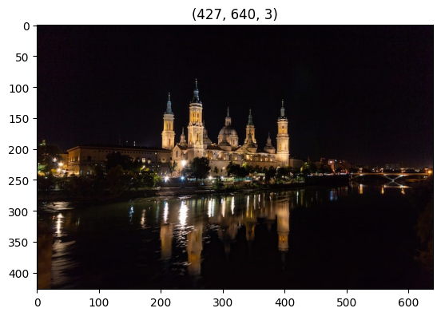
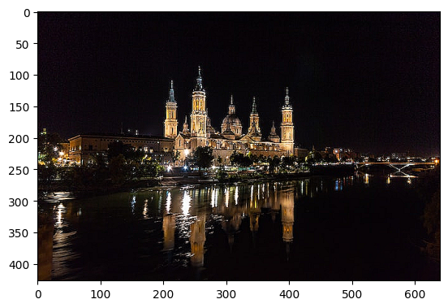
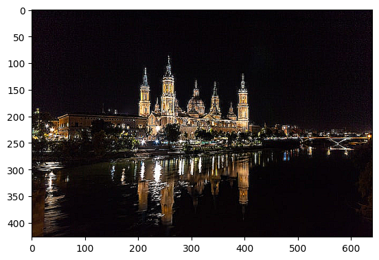

Kernel-based Deblurring
Imports
We can skip the next cell if neural_de was installed from pip install.
[1]:
import sys
sys.path.append("..")
import time
[2]:
from neural_de.transformations.kernel_deblurring_enhancer import KernelDeblurringEnhancer
import numpy as np
from pathlib import Path
import cv2
import matplotlib.pyplot as plt
%matplotlib inline
[3]:
start=time.time()
image_path = Path('../examples/images/night.jpg')
image = cv2.imread(str(image_path))
image = cv2.cvtColor(image, cv2.COLOR_BGR2RGB)
plt.imshow(image)
plt.title(image.shape)
[3]:
Text(0.5, 1.0, '(427, 640, 3)')

Let’s deblur this images
two kernels presets are provided : “high” and “medium”
default value is “high”
You can also use your own kernel
[4]:
kerneldeblur = KernelDeblurringEnhancer()
purified = kerneldeblur.transform([image])
plt.imshow(purified[0])
[03-20 09:12:22] {/home/jovyan/Maturation/NeuralDE/examples/../neural_de/utils/twe_logger.py:123} INFO - Logger: name: neural_de_logger, handlers: [<StreamHandler stdout (DEBUG)>]
[4]:
<matplotlib.image.AxesImage at 0x7facac4516d0>
“medium” if “high” lead to an image to far from the original one
[5]:
kerneldeblur = KernelDeblurringEnhancer(kernel="medium")
purified = kerneldeblur.transform([image])
plt.imshow(purified[0])
[03-20 09:12:22] {/home/jovyan/Maturation/NeuralDE/examples/../neural_de/utils/twe_logger.py:123} INFO - Logger: name: neural_de_logger, handlers: [<StreamHandler stdout (DEBUG)>]
[5]:
<matplotlib.image.AxesImage at 0x7facac3e11f0>

You can also provide your own kernel :
it can be any 2D custom np.array.
Here is a custom kernel with effect between “medium” and “high” :
[6]:
# "medium-high"
custom_kernel = np.array([[-0.5, -1, -0.5], [-1, 7, -1], [-0.5, -1, -0.5]])
[7]:
kerneldeblur = KernelDeblurringEnhancer(custom_kernel=custom_kernel)
purified = kerneldeblur.transform([image])
plt.imshow(purified[0])
[03-20 09:12:23] {/home/jovyan/Maturation/NeuralDE/examples/../neural_de/utils/twe_logger.py:123} INFO - Logger: name: neural_de_logger, handlers: [<StreamHandler stdout (DEBUG)>]
[03-20 09:12:23] {/home/jovyan/Maturation/NeuralDE/examples/../neural_de/transformations/kernel_deblurring_enhancer.py:45} INFO - Custom weights loaded
[7]:
<matplotlib.image.AxesImage at 0x7facac2eb1c0>

[8]:
end=time.time()
print("temps final : ",end-start)
temps final : 1.077439785003662
[ ]: